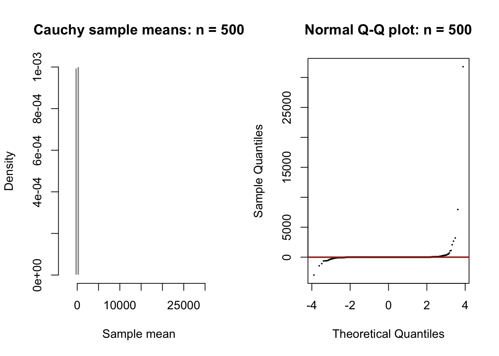

Code
source("../R/helpers.R")
student_id <- 6599L # Replace with the last four digits of your student ID.
B <- B_DEFAULT
study <- study_population("cauchy", seed = student_id, B = B)
d <- study$diagnosticsA deliberate CLT limitation
The observations are independent Cauchy(location = 0, scale = 1) values. The Cauchy distribution has no finite population mean or variance, so the usual finite-variance Central Limit Theorem does not apply. I predict that ordinary sample means will remain unstable and will not meet the normality criteria.
I generated B = 10000 sample means at candidate sizes 2, 5, 10, 15, 20, 30, 40, 50, 75, 100, 150, 200, 300, 500. The common shape screen requires absolute skewness ≤ 0.20, absolute excess kurtosis ≤ 0.30, Q-Q correlation ≥ 0.995, and standardized Q-Q RMSE ≤ 0.08, with three consecutive passing values required. For Cauchy data, the simulated mean and standard deviation are reported descriptively only; they are not estimates of finite population parameters.
display <- d[, c("n", "simulated_mean", "simulated_sd", "skewness",
"excess_kurtosis", "qq_correlation", "qq_rmse",
"normal_enough", "stable_pass")]
display$normal_enough <- ifelse(display$normal_enough, "yes", "no")
display$stable_pass <- ifelse(display$stable_pass, "yes", "no")
knitr::kable(display, digits = 3)| n | simulated_mean | simulated_sd | skewness | excess_kurtosis | qq_correlation | qq_rmse | normal_enough | stable_pass |
|---|---|---|---|---|---|---|---|---|
| 2 | -1.994 | 113.688 | -54.852 | 3336.658 | 0.150 | 1.304 | no | no |
| 5 | -3.405 | 382.589 | -90.938 | 8865.814 | 0.085 | 1.353 | no | no |
| 10 | -0.509 | 245.964 | -24.542 | 4319.152 | 0.125 | 1.322 | no | no |
| 15 | -0.148 | 165.019 | -24.035 | 4211.811 | 0.141 | 1.311 | no | no |
| 20 | -0.196 | 125.388 | -23.319 | 3999.900 | 0.158 | 1.298 | no | no |
| 30 | 3.738 | 360.161 | 88.251 | 8477.575 | 0.088 | 1.351 | no | no |
| 40 | -0.809 | 462.581 | -34.880 | 5217.802 | 0.090 | 1.349 | no | no |
| 50 | -0.640 | 370.225 | -34.833 | 5208.478 | 0.095 | 1.346 | no | no |
| 75 | -0.609 | 248.431 | -34.189 | 5073.220 | 0.108 | 1.336 | no | no |
| 100 | -0.562 | 189.967 | -32.519 | 4702.149 | 0.126 | 1.322 | no | no |
| 150 | 0.463 | 156.822 | 1.341 | 3042.485 | 0.144 | 1.309 | no | no |
| 200 | 2.482 | 231.607 | 63.307 | 5614.586 | 0.116 | 1.330 | no | no |
| 300 | 6.788 | 553.360 | 89.159 | 8437.354 | 0.078 | 1.358 | no | no |
| 500 | 4.191 | 334.261 | 87.461 | 8213.515 | 0.093 | 1.346 | no | no |
plot_n <- max(N_VALUES)
x <- study$samples[[as.character(plot_n)]]
old_par <- par(mfrow = c(1, 2))
hist(x, breaks = 50, probability = TRUE, col = "gray60", border = "white",
main = paste("Cauchy sample means: n =", plot_n), xlab = "Sample mean")
qqnorm(x, main = paste("Normal Q-Q plot: n =", plot_n), pch = 16, cex = 0.3)
qqline(x, col = "firebrick", lwd = 2)
The first stable pass is no stable value in the investigated range. Within the investigated range, no stable (n) met all criteria. This is not evidence that a larger finite (n) must eventually work; it is evidence that ordinary sample means are not governed by the usual finite-mean, finite-variance CLT here. The heavy tails also make exact summaries highly seed-sensitive.
---
title: "Cauchy Population"
subtitle: "A deliberate CLT limitation"
format: html
---
```{r}
source("../R/helpers.R")
student_id <- 6599L # Replace with the last four digits of your student ID.
B <- B_DEFAULT
study <- study_population("cauchy", seed = student_id, B = B)
d <- study$diagnostics
```
## Population and prediction
The observations are independent Cauchy(location = 0, scale = 1) values. The
Cauchy distribution has no finite population mean or variance, so the usual
finite-variance Central Limit Theorem does not apply. I predict that ordinary
sample means will remain unstable and will not meet the normality criteria.
## Experimental design and decision rule
I generated `r paste0("B = ", B)` sample means at candidate sizes `r paste(N_VALUES, collapse = ", ")`. The common shape screen requires absolute skewness ≤ 0.20,
absolute excess kurtosis ≤ 0.30, Q-Q correlation ≥ 0.995, and standardized Q-Q
RMSE ≤ 0.08, with three consecutive passing values required. For Cauchy data,
the simulated mean and standard deviation are reported descriptively only; they
are not estimates of finite population parameters.
## Results
```{r}
display <- d[, c("n", "simulated_mean", "simulated_sd", "skewness",
"excess_kurtosis", "qq_correlation", "qq_rmse",
"normal_enough", "stable_pass")]
display$normal_enough <- ifelse(display$normal_enough, "yes", "no")
display$stable_pass <- ifelse(display$stable_pass, "yes", "no")
knitr::kable(display, digits = 3)
```
## Visual evidence
```{r}
plot_n <- max(N_VALUES)
x <- study$samples[[as.character(plot_n)]]
old_par <- par(mfrow = c(1, 2))
hist(x, breaks = 50, probability = TRUE, col = "gray60", border = "white",
main = paste("Cauchy sample means: n =", plot_n), xlab = "Sample mean")
qqnorm(x, main = paste("Normal Q-Q plot: n =", plot_n), pch = 16, cex = 0.3)
qqline(x, col = "firebrick", lwd = 2)
par(old_par)
```
## Conclusion
The first stable pass is **`r ifelse(is.na(study$selected_n), "no stable value in the investigated range", paste0("n = ", study$selected_n))`**. Within the investigated range, no stable \(n\) met all criteria. This is not evidence that a larger finite \(n\) must eventually work; it is evidence that ordinary sample means are not governed by the usual finite-mean, finite-variance CLT here. The heavy tails also make exact summaries highly seed-sensitive.
## Reproducibility check
```{r}
reproducibility_check("cauchy", n = plot_n, seed_a = student_id,
seed_b = 2026L, B = B)
```